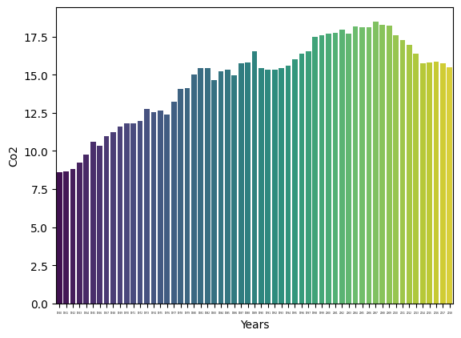

Australia 📍
CO2 Emissions: Visualized Trends, Causes, and Effects
Visual Trends:
- The bar graph shows CO2 emissions over the years, starting from a lower base in the early 1980s and gradually increasing, with a prominent peak around the mid to late 2000s.
- Post-peak, there is a slight decline, indicating some successful reduction efforts.
Reasons for Increased Emissions:
- Industrial Activities: Australia's booming industries, particularly mining and manufacturing, relied heavily on fossil fuels, contributing significantly to CO2 emissions.
- Energy Production: Extensive use of coal-fired power plants historically led to substantial emissions.
- Transportation: Increased use of cars and growth in the aviation sector resulted in higher emissions from transportation.
- Deforestation: Clearing forests for agriculture and urban expansion reduced the natural carbon sinks, leading to higher atmospheric CO2 levels.
- Population Growth: A growing population means more energy consumption, vehicles, and higher demand for goods, contributing to increased CO2 emissions.
After Effects:
- Climate Change: Rising CO2 levels contribute to global warming, leading to extreme weather events such as severe heatwaves, bushfires, and floods.
- Health Issues: Air pollution can lead to respiratory diseases and other health problems.
- Environmental Impact: Changes in climate affect ecosystems and biodiversity, causing habitat loss and species extinction.
- Economic Costs: Climate change impacts, such as damaged infrastructure and increased healthcare costs, can strain the economy.
- Sea Level Rise: Melting polar ice caps due to global warming result in rising sea levels, affecting coastal regions and communities.
Australia's story with CO2 emissions reflects the challenges and triumphs in balancing development and environmental sustainability. 🌏🔄
